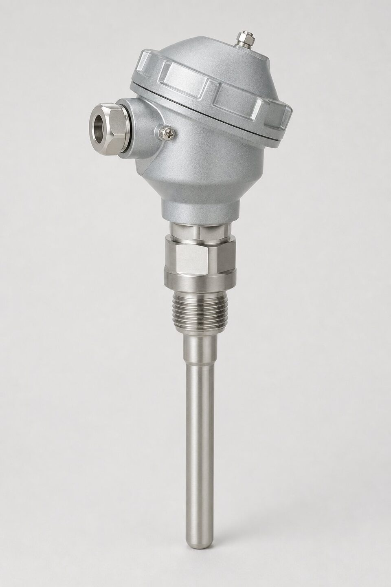

زنجیره اندازهگیری دما
یک حلقه اندازهگیری دما از سه جزء اصلی تشکیل شده است: سنسور که دما را به سیگنال الکتریکی تبدیل میکند، ترموول که سنسور را در برابر فرایند محافظت مینماید و ترانسمیتر که سیگنال خام را به خروجی استاندارد تبدیل و نویز مسیر را حذف میکند. کیفیت اندازهگیری به هر سه جزء و نحوه نصب آنها بستگی دارد؛ ضعف در هر بخش، خود را در خوانش نهایی نشان میدهد. درک نقش هر جزء، اولین قدم برای انتخاب درست و عیبیابی سریع در بهرهبرداری است.

سنسورها: ترموکوپل و (RTD)
ترموکوپلها بر اساس اثر ترموالکتریک کار میکنند: اتصال دو فلز متفاوت، ولتاژی متناسب با دما تولید میکند. رنج وسیع، استحکام مکانیکی و پاسخ سریع، آنها را برای دماهای بالا و نقاط خشن مناسب میسازد. در مقابل، سنسورهای مقاومتی با تغییر مقاومت فلز خالص با دما کار میکنند و در رنجهای معمول فرایندی، دقت و پایداری بلندمدت بهتری دارند؛ به همین دلیل انتخاب اول نقاط حساس کنترل هستند. انتخاب بین این دو با رنج دما، دقت موردنیاز و شرایط محیطی انجام میشود؛ در دماهای خیلی بالا ترموکوپل و در رنجهای متوسط با نیاز به دقت، سنسور مقاومتی انتخاب میگردد.
ترموول و نکات مکانیکی
ترموول، غلاف محافظ سنسور است و سه مزیت دارد: محافظت سنسور در برابر فشار و خوردگی، امکان تعویض بدون توقف فرایند و جداسازی ایمن سیال. اما یک بهای مکانیکی نیز دارد: تاخیر در پاسخ و امکان خطای انتقال حرارت. جنس ترموول باید متناسب سیال انتخاب شود و در خطوط با سرعت بالا یا ارتعاش، تحلیل مکانیکی غلاف اهمیت پیدا میکند؛ شکست ترموول در اثر خستگی، از خطرات شناختهشده این تجهیز است. عمق غوطهوری نیز باید به اندازهای باشد که نوک سنسور در جریان اصلی سیال قرار گیرد.
ترانسمیتر: سر یا ریلی
ترانسمیترهای میدانی داخل محفظه اتصال سنسور نصب میشوند و سیگنال را همانجا به خروجی استاندارد تبدیل میکنند؛ این طرح نویز مسیر را حذف کرده و رایجترین انتخاب است. ترانسمیترهای ریلی در تابلو نصب میشوند و زمانی کاربرد دارند که چند سنسور به یک نقطه مرکزی میرسند یا دسترسی میدانی محدود است. ترانسمیترهای هوشمند، امکان پیکربندی رنج، پایش سلامت سنسور و عیبیابی از راه دور را نیز فراهم میکنند. در انتخاب، پروتکل ارتباطی، تعداد سیمهای سنسور و قابلیتهای تشخیصی موردنیاز را بررسی کنید.
عیبیابی حلقه اندازهگیری دما
وقتی خوانش دما مشکوک است، عیبیابی باید از کل زنجیره شروع شود، نه فقط از ترانسمیتر؛ چون مشکلات در هر حلقه میتوانند علائم مشابه ایجاد کنند. گام اول، تفکیک مشکل بین سنسور، ترانسمیتر، سیمکشی و سیستم دریافت است. سادهترین آزمون، اندازهگیری مقاومت یا میلیولتاژ در ترمینالهای ترانسمیتر و مقایسه آن با جدول مرجع سنسور است؛ اگر مقدار سنسور منطقی باشد اما خروجی ترانسمیتر نه، مشکل از ترانسمیتر یا پیکربندی آن است. شایعترین مشکلات سنسور شامل قطع یا اتصال کوتاه سیمها، نفوذ رطوبت به هد ترموکوپل و در شدن یا آلودگی غلاف است. در (RTD)، خطای سیمکشی یکی از مشکلات کلاسیک است: استفاده از اتصال دو سیمه در مسافتهای طولانی، مقاومت سیم را به اندازهگیری اضافه و خوانش را منحرف میکند. در ترموکوپلها، معکوس شدن قطبیت یا استفاده از کابل توسعه نامتناسب، خطاهای بزرگی ایجاد میکند که معمولا به اشتباه به سنسور نسبت داده میشوند. مشکلات ترانسمیتر نیز بیشتر به پیکربندی مربوط است: رنج اشتباه، نوع سنسور انتخابنشده یا جبران نقطه سرد غیرفعال در ترموکوپلها. اگر خوانش نوسان دارد، تداخل الکتریکی و مسیر کابلها را بررسی کنید؛ عبور کابل سیگنال در کنار کابلهای قدرت بدون شیلد مناسب، علت رایج نویز است. در نهایت، اگر تعویضی انجام شد، پیکربندی ترانسمیتر جدید را با مدارک حلقه تطبیق دهید و خوانش را با یک مرجع میدانی مقایسه نمایید تا صحت کل زنجیره تایید شود.
جمعبندی
اندازهگیری دقیق دما محصول سه انتخاب درست است: سنسور متناسب رنج و دقت، ترموول متناسب سیال و مکانیک خط، و ترانسمیتر با قابلیتهای موردنیاز. با رعایت عمق غوطهوری و کالیبراسیون دورهای، این زنجیره سالها خوانش پایدار ارائه میدهد و مبنای کنترل و ایمنی فرایند میشود.
سوالات رایج
تفاوت ترموکوپل و (RTD) چیست؟
ترموکوپل بر اساس ولتاژ حاصل از اتصال دو فلز متفاوت کار میکند، رنج وسیع و پاسخ سریعتری دارد اما دقت آن کمتر است؛ (RTD) بر اساس تغییر مقاومت فلز با دما کار میکند و در رنجهای متوسط دقیقتر و پایدارتر است.
ترموول چیست و چرا لازم است؟
غلاف محافظ سنسور که آن را از فشار و خوردگی سیال جدا میکند و امکان تعویض سنسور بدون توقف فرایند را میدهد. جنس و ضخامت آن باید متناسب سیال و دما انتخاب شود.
ترانسمیتر سر و ریلی چه تفاوتی دارند؟
ترانسمیتر سر داخل محفظه اتصال سنسور نصب میشود و برای نقاط میدانی رایج است؛ ترانسمیتر ریلی در تابلو قرار میگیرد و سیگنال سنسور از فاصله دور به آن میرسد. انتخاب به چیدمان نصب بستگی دارد.
مهمترین خطای اندازهگیری دما چیست؟
انتقال حرارت در طول غلاف و سنسور؛ وقتی بخشی از غلاف بیرون از فرایند خنکتر باشد، خوانش کمتر از دمای واقعی میشود. رعایت عمق غوطهوری مناسب، اصلیترین راه مقابله است.
مطالب مرتبط
با ذکر رنج دما، سیال و نوع سنسور، ترانسمیتر دما به همراه ترموول متناسب عرضه میشود.
مشاهده صفحه محصول ← ثبت RFQ همین محصولتامین این تجهیزات را به پیشرو تجهیز فرتاک بسپارید
شرکت پیشرو تجهیز فرتاک تامینکننده تخصصی تجهیزات صنعتی برای پروژههای نفت، گاز، پتروشیمی، فولاد و نیروگاهی است. برای دریافت پیشنهاد فنی و قیمت، استعلام (RFQ) خود را ثبت کنید تا کارشناسان مهندسی فروش در کوتاهترین زمان پاسخ دهند.
- تامین ابزار دقیقترانسمیترها و آنالایزرهای برندهای معتبر
- تامین تجهیزات صنایع نفت و گازپکیج مواد مطابق وندورلیست